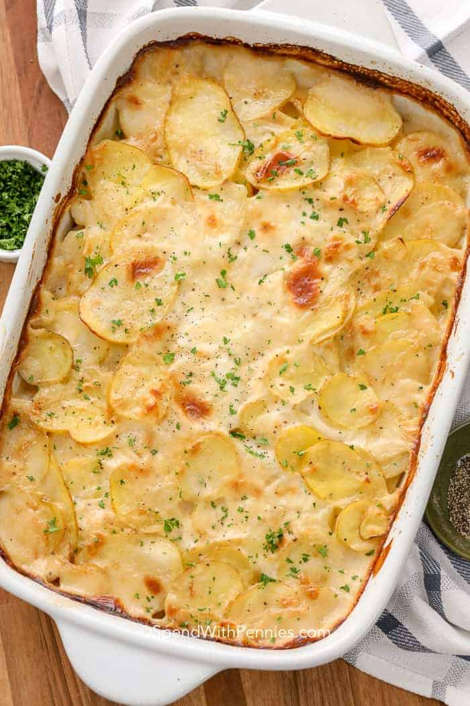

Scalloped Potatoes

Description
Yum, yum, yum!!
Ingredients
- 42g butter
- 4 tsp crushed garlic
- 1/4 cup plain flour
- 1 cup chicken stock
- 2 cups milk
- 1 tsp salt
- 1/2 tsp pepper
- 1 tsp dried thyme, rosemary, oregano etc
- 8 medim potatoes, peeled & thinly sliced
- 2-3 cups cheese
Steps
- Preheat oven to 200c
- Lightly grease a roasting dish approx 33 x 23cm
- Have all sauce ingredients ready as cooking times are fast
- Melt butter in a saucepan over medium heat
- Add garlic and simmer for 1 min
- Add flour and stir well. Cook gently for a further 1-2 minutes, ensuring it does not burn
- Add chicken stock and whisk until there are no lumps. It will look quite thick
- Add milk, salt, pepper and herbs. Whisk until fully combined
- Slowly heat the sauce until it just begins to simmer at the edges and slightly thicken (approx 2-3 minutes). Remove from heat and set aside
- Add half the potatoes to the dish, then half the cheese and half the sauce
- Repeat with the remaining potatoes, cheese and sauce
- Cover dish with aluminium foil and bake for 30 minutes
- Remove foil and bake for a further 30-40 minutes, until potatoes are cooked through
- Remove from the oven and allow to sit for 15 minutes for the sauce to thicken before serving